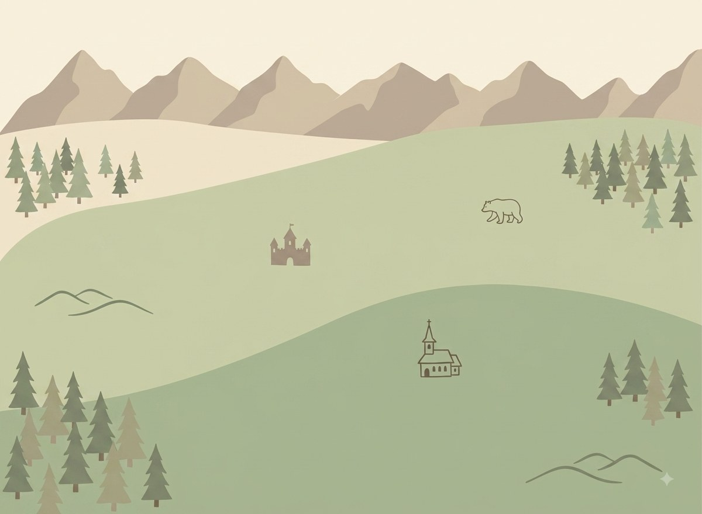

לו״ז טיול משפחתי ברומניה
מזג אוויר עכשיו
טוען תחזית...
המסלול שלנו

רומניה בקטנה
כמה מילים ברומנית
לחיצה על הרמקול משמיעה הגייה (תלוי בקול הזמין בדפדפן/מכשיר)
חידון הדרך
ציד המטמון המשפחתי
חפשו את אלה לאורך הטיול — סמנו ברגע שמצאתם (ואם תרצו, גם צלמו!).
ניחוש מחירים בלאו
כמה זה עולה ברומניה בערך? המחירים משוערים — זה משחק, לא תג מחיר מדויק.
בינגו הטיול
סמנו כל דבר שראיתם. השלמת כל התשע מזכה בבונוס!
מי מכיר הכי טוב את רומניה?
אפשר לשחק בכל המשחקים בלי שום הרשמה. הצטרפות ללוח הניקוד המשותף היא רשות בלבד — וכל הנקודות מכל המשחקים מצטברות אליו יחד.
הניקוד בלוח הזה משותף ונראה לכל מי שנכנס לאפליקציה הזו.
המרת מטבע
=
0 ₪